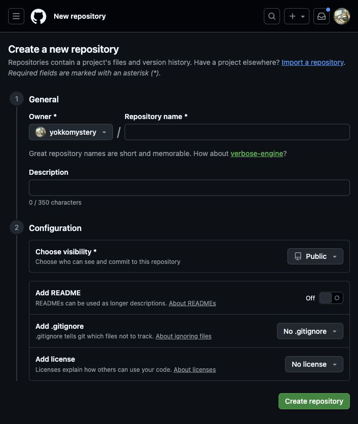
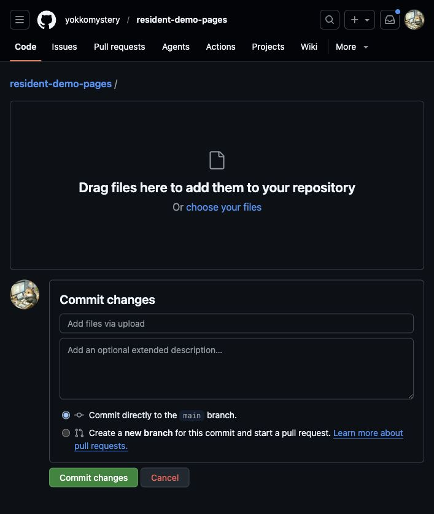
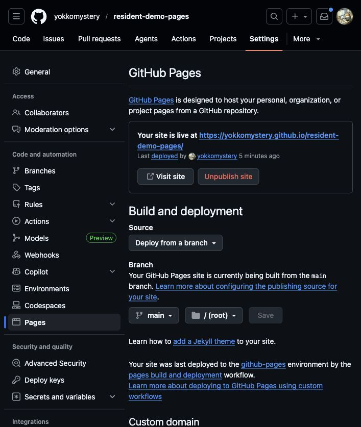

全体の流れ
- HTMLファイルの名前を「index.html」にする
- GitHubにログインする
- 公開用の置き場所を作る
- HTMLファイルをアップロードする
- GitHub Pagesを有効にする
- 表示されたURLを開く
所要時間の目安は5〜10分です。GitHubアカウントを持っていない場合は、
最初に無料アカウントを作成してください。
1
ファイル名を「index.html」にする
Finderで、公開したいHTMLファイルがあるフォルダを開きます。
今回は resident.html を選択し、コピーを作って、
コピーしたファイルの名前を index.html に変更します。
resident.htmlを右クリックする- 「複製」をクリックする
- 複製したファイルを右クリックして「名前を変更」をクリックする
- 名前を
index.htmlにする
「拡張子を変更してもよろしいですか？」と表示された場合は、 “.html”を使用を選びます。
元の
resident.html は残しておきます。
GitHub Pagesは index.html を最初のページとして表示します。
2
GitHubにログイン
- ブラウザで https://github.com/ を開く
- 右上の Sign in をクリックする
- メールアドレスまたはユーザー名と、パスワードを入力する
- Sign in をクリックする
アカウントがない場合は Sign up から無料で作成できます。
3
公開用の置き場所を作る
GitHubでは、ファイルの置き場所を「リポジトリ」と呼びます。
- GitHub画面の右上にある ＋ をクリックする
- New repository をクリックする
-
Repository name に名前を入力する
例：resident-demo-pages - Public を選ぶ
- Add a README file などのチェックは付けなくてよい
- 一番下の Create repository をクリックする
リポジトリ名には、半角英数字とハイフンを使うと分かりやすくなります。
日本語や空白は避けてください。

4
HTMLファイルをアップロード
- 作成後の画面にある uploading an existing file をクリックする
-
Finderから
index.htmlを点線の枠内へ ドラッグ＆ドロップする - ファイル名が表示されるまで待つ
- 画面下部の Commit changes をクリックする
CSS、画像、JavaScriptなど別のファイルも使っている場合は、
それらも一緒にドラッグ＆ドロップします。今回の
resident.html は単体でアップロードできます。

index.html をドラッグし、画面下部の
Commit changesを押します。
5
GitHub Pagesを有効化
- リポジトリ上部の Settings をクリックする
- 左側メニューの Pages をクリックする
- Build and deployment の Source で Deploy from a branch を選ぶ
-
Branch の左側を
main、 右側を/(root)にする - Save をクリックする
Settings が見つからない場合は、上部メニュー右端の
… の中を確認してください。

6
公開URLを開く
- 設定後、1〜3分ほど待つ
- ブラウザの再読み込みボタンを押す
- Pages設定画面上部の Your site is live at に続くURLを確認する
- Visit site をクリックする
公開URLは通常、次の形になります。
https://ユーザー名.github.io/リポジトリ名/
最初に「404」と表示されても、設定直後なら異常とは限りません。
2〜3分待ってから再読み込みしてください。
今回の公開結果
HTMLを更新するとき
- GitHubで対象のリポジトリを開く
- Add file → Upload files をクリックする
- 新しい
index.htmlをドラッグ＆ドロップする - Commit changes をクリックする
- 1〜3分待って公開ページを再読み込みする
同じ名前の
index.html をアップロードすると、
古い内容が新しい内容に更新されます。